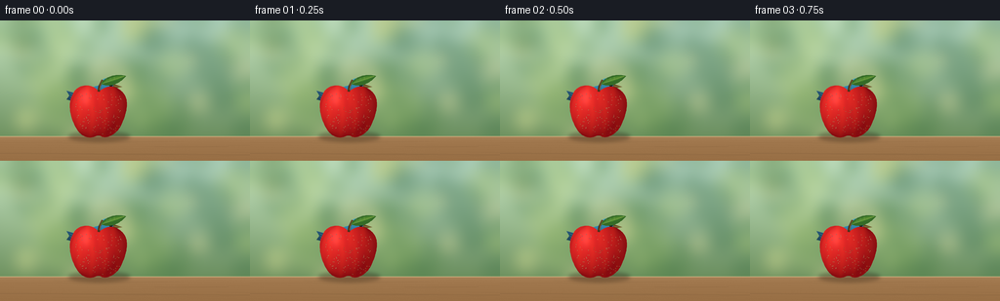
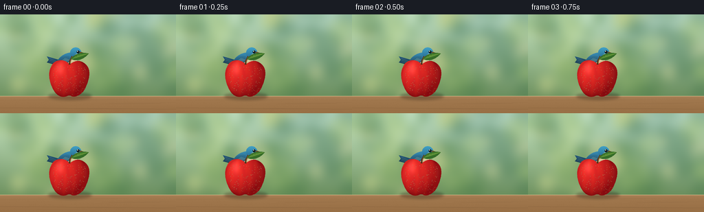
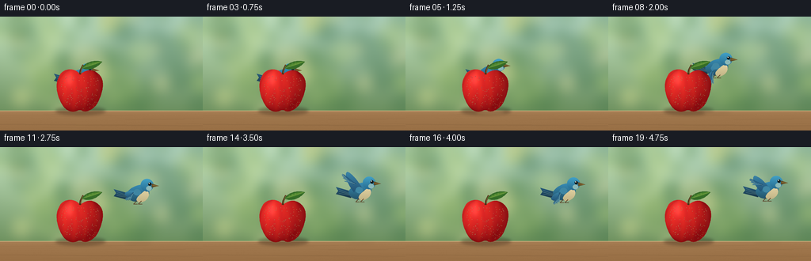
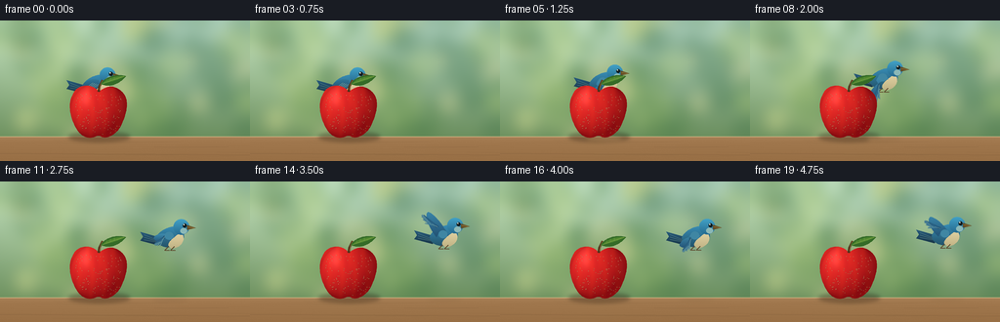

CODING AGENTS AS PIXEL WORLD MODELS
traex/GPT-6.1-Sol · dynamic_spatial_relationship_0036
点击播放 · 原生 RGB 像素
逐轮保存的候选
回放视频、检查图与代码变化。
每份候选均可单独播放。实际图片检查记录在下方工具轨迹中。
候选 01播放与检查图
点击播放 · 原生 RGB 像素


展开代码变化
--- 上一保存版本
+++ 本次保存版本
@@ -0,0 +1,185 @@
+from pathlib import Path
+import json, math
+import numpy as np
+from PIL import Image, ImageDraw, ImageFilter
+from artifact_io import save
+
+ROOT=Path(__file__).resolve().parent
+SPEC=json.loads((ROOT/'task_spec.json').read_text())
+W,H=SPEC['width'],SPEC['height']
+S=4
+rng=np.random.default_rng(36)
+
+def bezier(points,n=30):
+ p=np.array(points,float); t=np.linspace(0,1,n)[:,None]
+ return (1-t)**3*p[0]+3*(1-t)**2*t*p[1]+3*(1-t)*t**2*p[2]+t**3*p[3]
+
+def path(segments):
+ return [tuple(q) for seg in segments for q in bezier(seg)]
+
+def poly(draw,points,fill):
+ draw.polygon([(round(x*S),round(y*S)) for x,y in points],fill=fill)
+
+def ellipse(draw,b,fill):
+ draw.ellipse(tuple(round(v*S) for v in b),fill=fill)
+
+def line(draw,p,fill,width=1):
+ draw.line([(round(x*S),round(y*S)) for x,y in p],fill=fill,width=max(1,round(width*S)))
+
+Y,X=np.mgrid[:H*S,:W*S]/S
+# Warm, shallow-depth-of-field garden, kept still throughout the shot.
+t=np.clip(Y/144,0,1)[...,None]
+base=np.array([172,207,190])*(1-t)+np.array([94,130,75])*t
+base=base+np.exp(-((X-45)**2+(Y-24)**2)/5000)[...,None]*np.array([29,24,8])
+bg=Image.fromarray(np.uint8(np.clip(base,0,255)))
+d=ImageDraw.Draw(bg,'RGBA')
+for i in range(70):
+ cx=rng.uniform(-20,280);cy=rng.uniform(-20,122);r=rng.uniform(6,25)
+ color=[(50,105,65,65),(80,130,66,65),(186,210,129,75),(237,230,164,78)][i%4]
+ ellipse(d,(cx-r,cy-r,cx+r,cy+r),color)
+bg=bg.filter(ImageFilter.GaussianBlur(7*S))
+# Smooth wooden garden ledge, with restrained wood grain.
+arr=np.asarray(bg).astype(float).copy()
+wood=Y>=119
+wx=X;wy=Y-119
+noise=rng.normal(0,.65,X.shape)
+grain=1.6*np.sin(wy*3.6+np.sin(wx*.028)*2)+.8*np.sin(wy*8+wx*.018)
+shade=12*np.exp(-(wy)/2)-.4*wy
+for c,v in enumerate([162,121,79]):
+ arr[:,:,c]=np.where(wood,v+grain+noise+shade,arr[:,:,c])
+bg=Image.fromarray(np.uint8(np.clip(arr,0,255)))
+d=ImageDraw.Draw(bg,'RGBA')
+line(d,[(0,119),(256,119)],(227,198,146,170),.7)
+line(d,[(0,136),(256,138)],(82,58,35,45),.65)
+for i in range(17):
+ x=rng.uniform(-25,230);y=rng.uniform(123,144)
+ pts=[(x+j*4,y+math.sin(j*.18)*.4) for j in range(20)]
+ line(d,pts,(96,68,39,25),.2)
+
+# Organic apple silhouette with a dimple and a subtle asymmetry.
+apple_points=path([
+[(101,73),(95,64),(78,64),(74,77)],
+[(74,77),(67,89),(76,113),(85,118)],
+[(85,118),(94,123),(98,117),(102,118)],
+[(102,118),(109,123),(121,116),(125,105)],
+[(125,105),(131,91),(133,77),(121,70)],
+[(121,70),(113,65),(106,69),(101,73)]])
+mask=Image.new('L',(W*S,H*S));poly(ImageDraw.Draw(mask),apple_points,255)
+inside=np.asarray(mask)/255
+nx=(X-101)/29;ny=(Y-93)/29
+z=np.sqrt(np.clip(1-nx*nx-ny*ny,0,1))
+light=np.clip(-.49*nx-.45*ny+.72*z,0,1)
+red=139+99*light;green=13+32*light;blue=16+24*light
+# Naturally irregular longitudinal color bands and fine skin pores.
+stripe=np.sin(X*.49+np.sin(Y*.11)*1.2)+.4*np.sin(X*.95+Y*.065)
+red+=stripe*4;green+=stripe*2
+skin=rng.normal(0,1.35,X.shape)
+red+=skin;green+=skin*.45;blue+=skin*.4
+spec=np.exp(-((X-87)/5.6)**2-((Y-79)/9)**2)*31
+rim=np.exp(-((X-125)/2.6)**2-((Y-86)/16)**2)*15
+color=np.stack([red+spec+rim,green+spec*.9+rim*.8,blue+spec*.83+rim*.55],-1)
+apple=Image.fromarray(np.uint8(np.clip(color,0,255))).convert('RGBA');apple.putalpha(mask)
+ad=ImageDraw.Draw(apple,'RGBA')
+# Tiny warm lenticels.
+for i in range(115):
+ px=rng.uniform(76,126);py=rng.uniform(74,117)
+ if inside[int(py*S),int(px*S)] and ((px-101)**2+(py-93)**2<720):
+ r=rng.uniform(.12,.24)
+ ellipse(ad,(px-r,py-r,px+r,py+r),(247,193,118,int(rng.uniform(35,105))))
+# Stem emerges from the central indentation.
+line(ad,[(101,73),(102,67),(105,61)],(75,48,24,255),2.5)
+line(ad,[(101.7,71),(103,65),(105,61)],(143,111,59,255),.8)
+leaf=path([[(103,65),(109,55),(123,55),(129,57)],[(129,57),(122,65),(113,69),(103,65)]])
+poly(ad,leaf,(52,107,39,255))
+poly(ad,path([[(105,64),(114,57),(120,57),(128,57)],[(128,57),(120,61),(111,64),(105,64)]]),(77,135,46,255))
+line(ad,[(104,65),(114,61),(127,57)],(158,174,84,240),.5)
+for k in range(3):
+ line(ad,[(109+k*4,63-k*1.3),(109+k*4,59-k*.6)],(115,153,64,190),.35)
+
+
+def gradient_shape(im,points,c1,c2,box):
+ m=Image.new('L',im.size);poly(ImageDraw.Draw(m),points,255)
+ x1,y1,x2,y2=box
+ v=np.clip((Y-y1)/max(y2-y1,.1),0,1)[...,None]
+ col=np.array(c1)*(1-v)+np.array(c2)*v
+ col=np.broadcast_to(col,(H*S,W*S,3)).astype('uint8')
+ layer=Image.fromarray(col).convert('RGBA');layer.putalpha(m);im.alpha_composite(layer)
+
+
+def bird(cx,cy,phase,flying):
+ im=Image.new('RGBA',(W*S,H*S));d=ImageDraw.Draw(im,'RGBA')
+ # Blue songbird: long tail, pale belly, rounded head, eye and pointed beak.
+ tail=[(cx-10,cy-1),(cx-31,cy-7),(cx-28,cy-2),(cx-31,cy+2),(cx-12,cy+7)]
+ gradient_shape(im,tail,(39,91,124),(25,54,72),(cx-30,cy-7,cx,cy+7))
+ d=ImageDraw.Draw(im,'RGBA')
+ for off in range(3):line(d,[(cx-27,cy-4+off*2.5),(cx-12,cy+2+off*.8)],(84,132,151,160),.55)
+ body=path([[(cx+9,cy-11),(cx+4,cy-15),(cx-11,cy-10),(cx-15,cy-1)],[(cx-15,cy-1),(cx-15,cy+8),(cx-2,cy+12),(cx+8,cy+6)],[(cx+8,cy+6),(cx+15,cy+2),(cx+16,cy-6),(cx+9,cy-11)]])
+ gradient_shape(im,body,(55,138,178),(32,75,95),(cx-20,cy-12,cx+15,cy+12))
+ belly=path([[(cx+10,cy-6),(cx+17,cy-2),(cx+12,cy+10),(cx+1,cy+10)],[(cx+1,cy+10),(cx-5,cy+7),(cx-3,cy+3),(cx+10,cy-6)]])
+ gradient_shape(im,belly,(224,208,160),(190,177,131),(cx,cy-5,cx,cy+11))
+ d=ImageDraw.Draw(im,'RGBA')
+ # Small legs tuck in on takeoff.
+ if not flying:
+ for dx in [-3,6]:
+ line(d,[(cx+dx,cy+8),(cx+dx-1,cy+15),(cx+dx+5,cy+15)],(80,60,35,255),.9)
+ else:
+ for dx in [-2,4]:line(d,[(cx+dx,cy+8),(cx+dx-4,cy+12),(cx+dx+1,cy+12)],(93,72,44,255),.8)
+ # Rounded head and short neck, layered with a softly lit crown.
+ head=[(cx+11+8.1*math.cos(t),cy-12+8.0*math.sin(t)) for t in np.linspace(0,2*math.pi,75)]
+ gradient_shape(im,head,(66,161,198),(38,107,144),(cx,cy-20,cx,cy-4))
+ d=ImageDraw.Draw(im,'RGBA')
+ ellipse(d,(cx+10,cy-11,cx+17,cy-5),(139,184,183,255))
+ poly(d,[(cx+17,cy-14),(cx+26,cy-11),(cx+17,cy-9)],(99,76,36,255))
+ line(d,[(cx+18,cy-12),(cx+24,cy-11)],(203,171,86,255),.55)
+ ellipse(d,(cx+12.4,cy-15.4,cx+16.5,cy-11.3),(18,30,33,255))
+ ellipse(d,(cx+13.2,cy-14.9,cx+14.3,cy-13.8),(250,254,238,255))
+ # Feathery wing silhouette: a folded wing while perched, a cycling raised/lowered wing in flight.
+ if not flying:
+ wing=path([[(cx+2,cy-7),(cx-8,cy-10),(cx-15,cy-4),(cx-18,cy+4)],[(cx-18,cy+4),(cx-6,cy+9),(cx+4,cy+3),(cx+2,cy-7)]])
+ gradient_shape(im,wing,(48,119,151),(33,67,95),(cx,cy-8,cx,cy+6))
+ d=ImageDraw.Draw(im,'RGBA')
+ for k in range(5):line(d,[(cx-4+k*1.8,cy-4+k*.5),(cx-16+k*2.2,cy+4)],(113,160,177,160),.55)
+ else:
+ ang=phase
+ shoulder=np.array([cx-1,cy-4]); vec=np.array([-16, -27*ang])
+ # Secondary coverts and individually separated tapered primary feathers.
+ tip=shoulder+vec
+ normal=np.array([-vec[1],vec[0]])/np.linalg.norm(vec)
+ wing=path([[shoulder+np.array([5,3]),shoulder+vec*.32+normal*6,tip+normal*3,tip],
+ [tip,tip-normal*5,shoulder+vec*.45-normal*9,shoulder+np.array([-7,4])],
+ [shoulder+np.array([-7,4]),shoulder+np.array([-5,-3]),shoulder+np.array([3,-5]),shoulder+np.array([5,3])]])
+ gradient_shape(im,wing,(63,142,177),(28,69,103),(cx,min(cy,tip[1])-5,cx,max(cy,tip[1])+6))
+ d=ImageDraw.Draw(im,'RGBA')
+ for k in range(7):
+ f=k/6
+ start=shoulder+vec*(.32+.2*f)-normal*(1+f*3)
+ end=shoulder+vec*(.72+.33*math.sin(math.pi*f)) - normal*(4+5*f)
+ a=start+normal*1.35;b=end+normal*.75;c=end-normal*.6;e=start-normal*1.2
+ poly(d,[a,b,c,e],(32+3*k,80+5*k,114+5*k,255))
+ line(d,[start,end],(119,173,190,160),.45)
+ ellipse(d,(cx-6,cy-7,cx+3,cy+1),(63,134,163,255))
+ return im
+
+frames=[]
+for i in range(SPEC['frames']):
+ # Initial occlusion persists long enough to read, then a smooth rightward takeoff.
+ q=np.clip((i-3)/12,0,1)
+ u=q*q*(3-2*q)
+ cx=99+102*u
+ cy=79-22*math.sin(q*math.pi/2)
+ if i>=16:cy+=math.sin((i-15)*1.4)*1.2
+ flying=i>=4
+ flap=math.cos((i-4)*2.45) if flying else 0
+ scene=bg.convert('RGBA')
+ shadows=Image.new('RGBA',scene.size);sd=ImageDraw.Draw(shadows,'RGBA')
+ ellipse(sd,(70,114,133,124),(56,37,19,100))
+ ellipse(sd,(81,117,126,122),(47,30,17,85))
+ if q>0:
+ ellipse(sd,(cx-18,119,cx+18,123),(46,45,23,round(22*(1-q*.5))))
+ shadows=shadows.filter(ImageFilter.GaussianBlur(2*S));scene.alpha_composite(shadows)
+ scene.alpha_composite(bird(cx,cy,flap,flying))
+ # The apple is always foreground: the bird genuinely emerges from behind it.
+ scene.alpha_composite(apple)
+ frame=scene.convert('RGB').resize((W,H),Image.Resampling.LANCZOS)
+ frames.append(np.asarray(frame))
+save(np.stack(frames).astype(np.uint8),ROOT)
候选 02播放与检查图
点击播放 · 原生 RGB 像素


展开代码变化
--- 上一保存版本
+++ 本次保存版本
@@ -166,7 +166,7 @@
q=np.clip((i-3)/12,0,1)
u=q*q*(3-2*q)
cx=99+102*u
- cy=79-22*math.sin(q*math.pi/2)
+ cy=68-11*math.sin(q*math.pi/2)
if i>=16:cy+=math.sin((i-15)*1.4)*1.2
flying=i>=4
flap=math.cos((i-4)*2.45) if flying else 0
可观测工具轨迹
实际执行的命令与返回图片。
命令 1exit 0
/bin/bash -lc 'ls -la && cat prompt.txt && cat GENERATION_RULES.md && cat task_spec.json'
命令 2exit 0
/bin/bash -lc 'cat artifact_io.py'
命令 3exit 0
/bin/bash -lc "cat > generate.py <<'PY'
from pathlib import Path
import json, math
import numpy as np
from PIL import Image, ImageDraw, ImageFilter
from artifact_io import save
ROOT=Path(__file__).resolve().parent
SPEC=json.loads((ROOT/'task_spec.json').read_text())
W,H=SPEC['width'],SPEC['height']
S=4
rng=np.random.default_rng(36)
def bezier(points,n=30):
p=np.array(points,float); t=np.linspace(0,1,n)[:,None]
return (1-t)**3*p[0]+3*(1-t)**2*t*p[1]+3*(1-t)*t**2*p[2]+t**3*p[3]
def path(segments):
return [tuple(q) for seg in segments for q in bezier(seg)]
def poly(draw,points,fill):
draw.polygon([(round(x*S),round(y*S)) for x,y in points],fill=fill)
def ellipse(draw,b,fill):
draw.ellipse(tuple(round(v*S) for v in b),fill=fill)
def line(draw,p,fill,width=1):
draw.line([(round(x*S),round(y*S)) for x,y in p],fill=fill,width=max(1,round(width*S)))
Y,X=np.mgrid[:H*S,:W*S]/S
# Warm, shallow-depth-of-field garden, kept still throughout the shot.
t=np.clip(Y/144,0,1)[...,None]
base=np.array([172,207,190])*(1-t)+np.array([94,130,75])*t
base=base+np.exp(-((X-45)**2+(Y-24)**2)/5000)[...,None]*np.array([29,24,8])
bg=Image.fromarray(np.uint8(np.clip(base,0,255)))
d=ImageDraw.Draw(bg,'RGBA')
for i in range(70):
cx=rng.uniform(-20,280);cy=rng.uniform(-20,122);r=rng.uniform(6,25)
color=[(50,105,65,65),(80,130,66,65),(186,210,129,75),(237,230,164,78)][i%4]
ellipse(d,(cx-r,cy-r,cx+r,cy+r),color)
bg=bg.filter(ImageFilter.GaussianBlur(7*S))
# Smooth wooden garden ledge, with restrained wood grain.
arr=np.asarray(bg).astype(float).copy()
wood=Y>=119
wx=X;wy=Y-119
noise=rng.normal(0,.65,X.shape)
grain=1.6*np.sin(wy*3.6+np.sin(wx*.028)*2)+.8*np.sin(wy*8+wx*.018)
shade=12*np.exp(-(wy)/2)-.4*wy
for c,v in enumerate([162,121,79]):
arr[:,:,c]=np.where(wood,v+grain+noise+shade,arr[:,:,c])
bg=Image.fromarray(np.uint8(np.clip(arr,0,255)))
d=ImageDraw.Draw(bg,'RGBA')
line(d,[(0,119),(256,119)],(227,198,146,170),.7)
line(d,[(0,136),(256,138)],(82,58,35,45),.65)
for i in range(17):
x=rng.uniform(-25,230);y=rng.uniform(123,144)
pts=[(x+j*4,y+math.sin(j*.18)*.4) for j in range(20)]
line(d,pts,(96,68,39,25),.2)
# Organic apple silhouette with a dimple and a subtle asymmetry.
apple_points=path([
[(101,73),(95,64),(78,64),(74,77)],
[(74,77),(67,89),(76,113),(85,118)],
[(85,118),(94,123),(98,117),(102,118)],
[(102,118),(109,123),(121,116),(125,105)],
[(125,105),(131,91),(133,77),(121,70)],
[(121,70),(113,65),(106,69),(101,73)]])
mask=Image.new('L',(W*S,H*S));poly(ImageDraw.Draw(mask),apple_points,255)
inside=np.asarray(mask)/255
nx=(X-101)/29;ny=(Y-93)/29
z=np.sqrt(np.clip(1-nx*nx-ny*ny,0,1))
light=np.clip(-.49*nx-.45*ny+.72*z,0,1)
red=139+99*light;green=13+32*light;blue=16+24*light
# Naturally irregular longitudinal color bands and fine skin pores.
stripe=np.sin(X*.49+np.sin(Y*.11)*1.2)+.4*np.sin(X*.95+Y*.065)
red+=stripe*4;green+=stripe*2
skin=rng.normal(0,1.35,X.shape)
red+=skin;green+=skin*.45;blue+=skin*.4
spec=np.exp(-((X-87)/5.6)**2-((Y-79)/9)**2)*31
rim=np.exp(-((X-125)/2.6)**2-((Y-86)/16)**2)*15
color=np.stack([red+spec+rim,green+spec*.9+rim*.8,blue+spec*.83+rim*.55],-1)
apple=Image.fromarray(np.uint8(np.clip(color,0,255))).convert('RGBA');apple.putalpha(mask)
ad=ImageDraw.Draw(apple,'RGBA')
# Tiny warm lenticels.
for i in range(115):
px=rng.uniform(76,126);py=rng.uniform(74,117)
if inside[int(py*S),int(px*S)] and ((px-101)**2+(py-93)**2<720):
r=rng.uniform(.12,.24)
ellipse(ad,(px-r,py-r,px+r,py+r),(247,193,118,int(rng.uniform(35,105))))
# Stem emerges from the central indentation.
line(ad,[(101,73),(102,67),(105,61)],(75,48,24,255),2.5)
line(ad,[(101.7,71),(103,65),(105,61)],(143,111,59,255),.8)
leaf=path([[(103,65),(109,55),(123,55),(129,57)],[(129,57),(122,65),(113,69),(103,65)]])
poly(ad,leaf,(52,107,39,255))
poly(ad,path([[(105,64),(114,57),(120,57),(128,57)],[(128,57),(120,61),(111,64),(105,64)]]),(77,135,46,255))
line(ad,[(104,65),(114,61),(127,57)],(158,174,84,240),.5)
for k in range(3):
line(ad,[(109+k*4,63-k*1.3),(109+k*4,59-k*.6)],(115,153,64,190),.35)
def gradient_shape(im,points,c1,c2,box):
m=Image.new('L',im.size);poly(ImageDraw.Draw(m),points,255)
x1,y1,x2,y2=box
v=np.clip((Y-y1)/max(y2-y1,.1),0,1)[...,None]
col=np.array(c1)*(1-v)+np.array(c2)*v
col=np.broadcast_to(col,(H*S,W*S,3)).astype('uint8')
layer=Image.fromarray(col).convert('RGBA');layer.putalpha(m);im.alpha_composite(layer)
def bird(cx,cy,phase,flying):
im=Image.new('RGBA',(W*S,H*S));d=ImageDraw.Draw(im,'RGBA')
# Blue songbird: long tail, pale belly, rounded head, eye and pointed beak.
tail=[(cx-10,cy-1),(cx-31,cy-7),(cx-28,cy-2),(cx-31,cy+2),(cx-12,cy+7)]
gradient_shape(im,tail,(39,91,124),(25,54,72),(cx-30,cy-7,cx,cy+7))
d=ImageDraw.Draw(im,'RGBA')
for off in range(3):line(d,[(cx-27,cy-4+off*2.5),(cx-12,cy+2+off*.8)],(84,132,151,160),.55)
body=path([[(cx+9,cy-11),(cx+4,cy-15),(cx-11,cy-10),(cx-15,cy-1)],[(cx-15,cy-1),(cx-15,cy+8),(cx-2,cy+12),(cx+8,cy+6)],[(cx+8,cy+6),(cx+15,cy+2),(cx+16,cy-6),(cx+9,cy-11)]])
gradient_shape(im,body,(55,138,178),(32,75,95),(cx-20,cy-12,cx+15,cy+12))
belly=path([[(cx+10,cy-6),(cx+17,cy-2),(cx+12,cy+10),(cx+1,cy+10)],[(cx+1,cy+10),(cx-5,cy+7),(cx-3,cy+3),(cx+10,cy-6)]])
gradient_shape(im,belly,(224,208,160),(190,177,131),(cx,cy-5,cx,cy+11))
d=ImageDraw.Draw(im,'RGBA')
# Small legs tuck in on takeoff.
if not flying:
for dx in [-3,6]:
line(d,[(cx+dx,cy+8),(cx+dx-1,cy+15),(cx+dx+5,cy+15)],(80,60,35,255),.9)
else:
for dx in [-2,4]:line(d,[(cx+dx,cy+8),(cx+dx-4,cy+12),(cx+dx+1,cy+12)],(93,72,44,255),.8)
# Rounded head and short neck, layered with a softly lit crown.
head=[(cx+11+8.1*math.cos(t),cy-12+8.0*math.sin(t)) for t in np.linspace(0,2*math.pi,75)]
gradient_shape(im,head,(66,161,198),(38,107,144),(cx,cy-20,cx,cy-4))
d=ImageDraw.Draw(im,'RGBA')
ellipse(d,(cx+10,cy-11,cx+17,cy-5),(139,184,183,255))
poly(d,[(cx+17,cy-14),(cx+26,cy-11),(cx+17,cy-9)],(99,76,36,255))
line(d,[(cx+18,cy-12),(cx+24,cy-11)],(203,171,86,255),.55)
ellipse(d,(cx+12.4,cy-15.4,cx+16.5,cy-11.3),(18,30,33,255))
ellipse(d,(cx+13.2,cy-14.9,cx+14.3,cy-13.8),(250,254,238,255))
# Feathery wing silhouette: a folded wing while perched, a cycling raised/lowered wing in flight.
if not flying:
wing=path([[(cx+2,cy-7),(cx-8,cy-10),(cx-15,cy-4),(cx-18,cy+4)],[(cx-18,cy+4),(cx-6,cy+9),(cx+4,cy+3),(cx+2,cy-7)]])
gradient_shape(im,wing,(48,119,151),(33,67,95),(cx,cy-8,cx,cy+6))
d=ImageDraw.Draw(im,'RGBA')
for k in range(5):line(d,[(cx-4+k*1.8,cy-4+k*.5),(cx-16+k*2.2,cy+4)],(113,160,177,160),.55)
else:
ang=phase
shoulder=np.array([cx-1,cy-4]); vec=np.array([-16, -27*ang])
# Secondary coverts and individually separated tapered primary feathers.
tip=shoulder+vec
normal=np.array([-vec[1],vec[0]])/np.linalg.norm(vec)
wing=path([[shoulder+np.array([5,3]),shoulder+vec*.32+normal*6,tip+normal*3,tip],
[tip,tip-normal*5,shoulder+vec*.45-normal*9,shoulder+np.array([-7,4])],
[shoulder+np.array([-7,4]),shoulder+np.array([-5,-3]),shoulder+np.array([3,-5]),shoulder+np.array([5,3])]])
gradient_shape(im,wing,(63,142,177),(28,69,103),(cx,min(cy,tip[1])-5,cx,max(cy,tip[1])+6))
d=ImageDraw.Draw(im,'RGBA')
for k in range(7):
f=k/6
start=shoulder+vec*(.32+.2*f)-normal*(1+f*3)
end=shoulder+vec*(.72+.33*math.sin(math.pi*f)) - normal*(4+5*f)
a=start+normal*1.35;b=end+normal*.75;c=end-normal*.6;e=start-normal*1.2
poly(d,[a,b,c,e],(32+3*k,80+5*k,114+5*k,255))
line(d,[start,end],(119,173,190,160),.45)
ellipse(d,(cx-6,cy-7,cx+3,cy+1),(63,134,163,255))
return im
frames=[]
for i in range(SPEC['frames']):
# Initial occlusion persists long enough to read, then a smooth rightward takeoff.
q=np.clip((i-3)/12,0,1)
u=q*q*(3-2*q)
cx=99+102*u
cy=79-22*math.sin(q*math.pi/2)
if i>=16:cy+=math.sin((i-15)*1.4)*1.2
flying=i>=4
flap=math.cos((i-4)*2.45) if flying else 0
scene=bg.convert('RGBA')
shadows=Image.new('RGBA',scene.size);sd=ImageDraw.Draw(shadows,'RGBA')
ellipse(sd,(70,114,133,124),(56,37,19,100))
ellipse(sd,(81,117,126,122),(47,30,17,85))
if q>0:
ellipse(sd,(cx-18,119,cx+18,123),(46,45,23,round(22*(1-q*.5))))
shadows=shadows.filter(ImageFilter.GaussianBlur(2*S));scene.alpha_composite(shadows)
scene.alpha_composite(bird(cx,cy,flap,flying))
# The apple is always foreground: the bird genuinely emerges from behind it.
scene.alpha_composite(apple)
frame=scene.convert('RGB').resize((W,H),Image.Resampling.LANCZOS)
frames.append(np.asarray(frame))
save(np.stack(frames).astype(np.uint8),ROOT)
PY
python generate.py"命令 4exit 0
/bin/bash -lc "python - <<'PY'
p='generate.py'
s=open(p).read().replace('cy=79-22*math.sin(q*math.pi/2)','cy=68-11*math.sin(q*math.pi/2)')
open(p,'w').write(s)
PY
python generate.py"视觉工具实际返回图片 1

视觉工具实际返回图片 2

保存候选 2 份；完成命令 4 次；可验证图片返回 2 张。原始 API 响应与完整日志保留在本地。